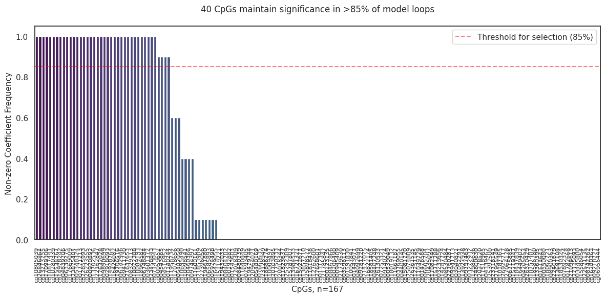
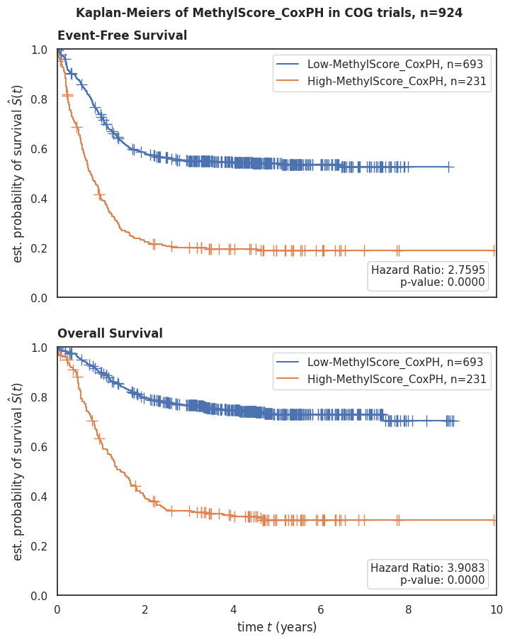
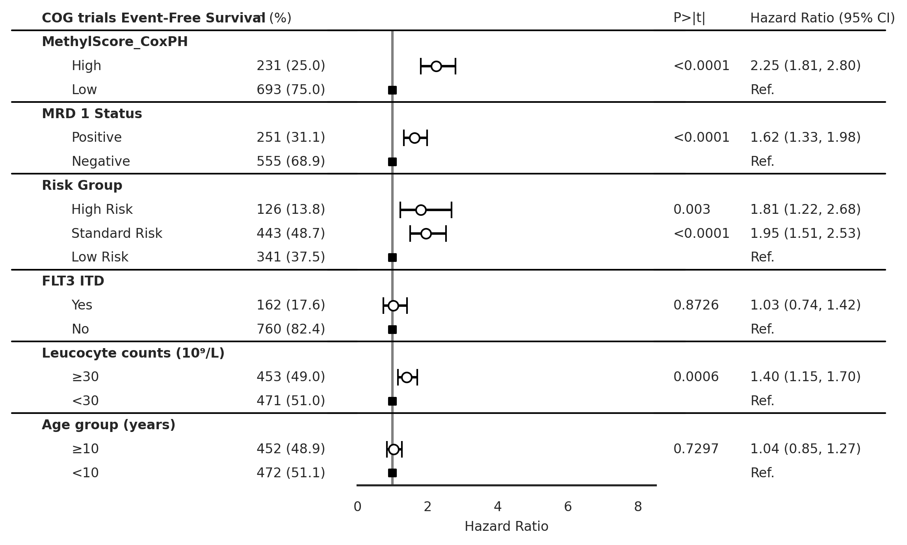
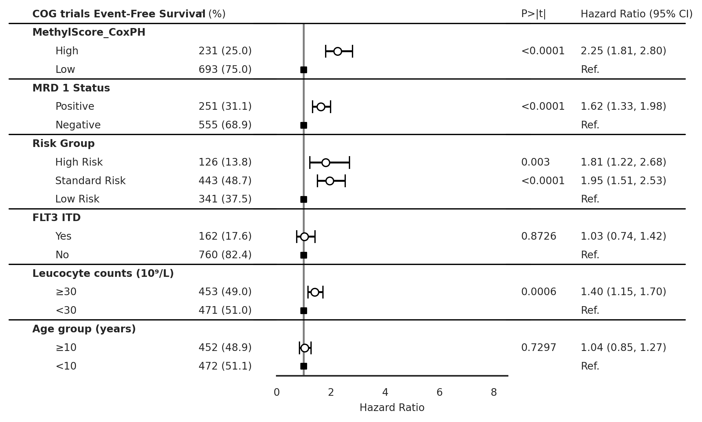
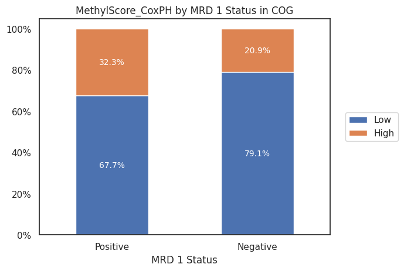
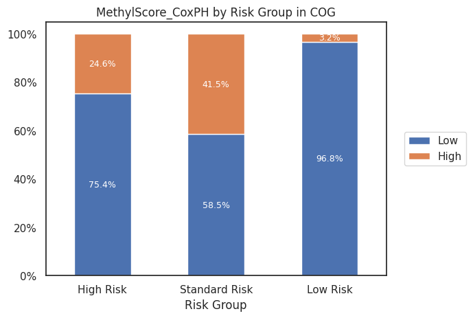
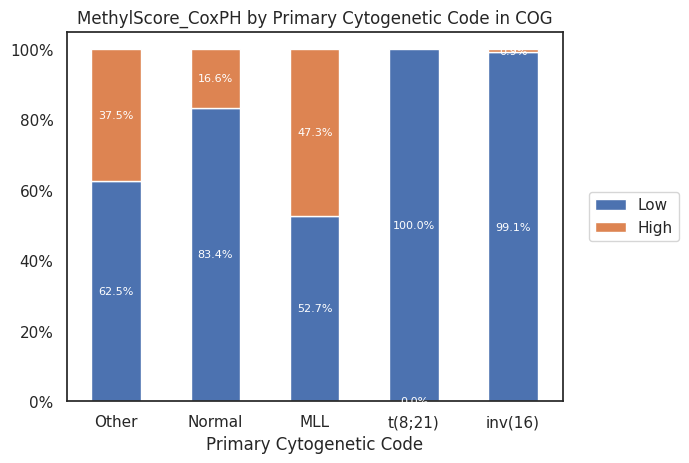

CoxPH-Lasso on top EWAS results#
Load Data#
Show code cell source
import pandas as pd
input_path = '../Data/Intermediate_Files/'
clinical_data_path = '../Data/Raw_Data/Clinical_Data/'
output_path = '../Data/Processed_Data/'
df_methyl = pd.read_pickle(
input_path+'df_batch_uncorrected.pkl').sort_index()
# Import functions to clean up clinical data
from FM_Functions.Clinical_Data_CleanUp import *
# Call functions to merge, index and clean clinical data files
labels_0531 = clean_cog (merge_index_0531())
labels_1031 = clean_cog (merge_index_1031())
labels_aml05 = clean_aml05 (merge_index_aml05())
labels_beataml = clean_beataml (merge_index_beataml())
labels_amltcga = clean_amltcga (merge_index_amltcga())
labels_nordic_all = clean_nordic_all(merge_index_nordic_all())
labels_mds_taml = clean_mds_taml (merge_index_mds_taml())
labels_all_graal = clean_all_graal (merge_index_all_graal())
labels_target_all = clean_target_all(merge_index_target_all())
# Combine all clinical data labels into one dataframe
labels_combined = pd.concat([labels_aml05, labels_beataml,
labels_0531, labels_amltcga, labels_1031,
labels_nordic_all, labels_mds_taml,
labels_all_graal,labels_target_all], axis=0, join='outer')
# read x_top from output file
x = pd.read_pickle(output_path+'ewas_dmr/ewas_top_x.pkl')
# Remove samples that are not in the methyl dataset
df_labels = labels_combined.loc[labels_combined.index.isin(x.index)].sort_index()
print(
f' Dataset (df) contains {x.shape[1]} columns (5mC nucleotides/probes) and {x.shape[0]} rows (samples).')
Dataset (df) contains 167 columns (5mC nucleotides/probes) and 924 rows (samples).
Perform multivariate CoxPH-Lasso#
Here we will run on 167 CpGs that were selected from EWAS risk-adjusted OS at 1*10e-6 significance:
Show code cell source
# Import functions to clean up clinical data
from FM_Functions.Cox_Lasso_Function import *
raw_coefs = train_coxph_lasso(df=df_labels,
event= 'os.evnt',
time= 'os.time',
train_x=x,
cv_n_split=10,
loops=10)
raw_coefs.to_csv(output_path + 'multivariate_cox_lasso/ewas_cog_os_raw_coefs.csv')
raw_coefs = pd.read_csv(output_path + 'multivariate_cox_lasso/ewas_cog_os_raw_coefs.csv', index_col=0)
Show code cell output
Running Cox-Lasso through 10 loops:
0%| | 0/10 [00:00<?, ?it/s]/home/fmarchi/projects/MethylScore/Code/.venv_py38/lib/python3.8/site-packages/sklearn/pipeline.py:405: UserWarning: all coefficients are zero, consider decreasing alpha.
self._final_estimator.fit(Xt, y, **fit_params_last_step)
/home/fmarchi/projects/MethylScore/Code/.venv_py38/lib/python3.8/site-packages/sklearn/pipeline.py:405: UserWarning: all coefficients are zero, consider decreasing alpha.
self._final_estimator.fit(Xt, y, **fit_params_last_step)
/home/fmarchi/projects/MethylScore/Code/.venv_py38/lib/python3.8/site-packages/sklearn/pipeline.py:405: UserWarning: all coefficients are zero, consider decreasing alpha.
self._final_estimator.fit(Xt, y, **fit_params_last_step)
10%|█ | 1/10 [00:03<00:29, 3.25s/it]/home/fmarchi/projects/MethylScore/Code/.venv_py38/lib/python3.8/site-packages/sklearn/pipeline.py:405: UserWarning: all coefficients are zero, consider decreasing alpha.
self._final_estimator.fit(Xt, y, **fit_params_last_step)
/home/fmarchi/projects/MethylScore/Code/.venv_py38/lib/python3.8/site-packages/sklearn/pipeline.py:405: UserWarning: all coefficients are zero, consider decreasing alpha.
self._final_estimator.fit(Xt, y, **fit_params_last_step)
/home/fmarchi/projects/MethylScore/Code/.venv_py38/lib/python3.8/site-packages/sklearn/pipeline.py:405: UserWarning: all coefficients are zero, consider decreasing alpha.
self._final_estimator.fit(Xt, y, **fit_params_last_step)
/home/fmarchi/projects/MethylScore/Code/.venv_py38/lib/python3.8/site-packages/sklearn/pipeline.py:405: UserWarning: all coefficients are zero, consider decreasing alpha.
self._final_estimator.fit(Xt, y, **fit_params_last_step)
20%|██ | 2/10 [00:06<00:26, 3.33s/it]/home/fmarchi/projects/MethylScore/Code/.venv_py38/lib/python3.8/site-packages/sklearn/pipeline.py:405: UserWarning: all coefficients are zero, consider decreasing alpha.
self._final_estimator.fit(Xt, y, **fit_params_last_step)
/home/fmarchi/projects/MethylScore/Code/.venv_py38/lib/python3.8/site-packages/sklearn/pipeline.py:405: UserWarning: all coefficients are zero, consider decreasing alpha.
self._final_estimator.fit(Xt, y, **fit_params_last_step)
/home/fmarchi/projects/MethylScore/Code/.venv_py38/lib/python3.8/site-packages/sklearn/pipeline.py:405: UserWarning: all coefficients are zero, consider decreasing alpha.
self._final_estimator.fit(Xt, y, **fit_params_last_step)
30%|███ | 3/10 [00:09<00:23, 3.32s/it]/home/fmarchi/projects/MethylScore/Code/.venv_py38/lib/python3.8/site-packages/sklearn/pipeline.py:405: UserWarning: all coefficients are zero, consider decreasing alpha.
self._final_estimator.fit(Xt, y, **fit_params_last_step)
/home/fmarchi/projects/MethylScore/Code/.venv_py38/lib/python3.8/site-packages/sklearn/pipeline.py:405: UserWarning: all coefficients are zero, consider decreasing alpha.
self._final_estimator.fit(Xt, y, **fit_params_last_step)
40%|████ | 4/10 [00:13<00:20, 3.42s/it]/home/fmarchi/projects/MethylScore/Code/.venv_py38/lib/python3.8/site-packages/sklearn/pipeline.py:405: UserWarning: all coefficients are zero, consider decreasing alpha.
self._final_estimator.fit(Xt, y, **fit_params_last_step)
/home/fmarchi/projects/MethylScore/Code/.venv_py38/lib/python3.8/site-packages/sklearn/pipeline.py:405: UserWarning: all coefficients are zero, consider decreasing alpha.
self._final_estimator.fit(Xt, y, **fit_params_last_step)
50%|█████ | 5/10 [00:16<00:17, 3.44s/it]/home/fmarchi/projects/MethylScore/Code/.venv_py38/lib/python3.8/site-packages/sklearn/pipeline.py:405: UserWarning: all coefficients are zero, consider decreasing alpha.
self._final_estimator.fit(Xt, y, **fit_params_last_step)
/home/fmarchi/projects/MethylScore/Code/.venv_py38/lib/python3.8/site-packages/sklearn/pipeline.py:405: UserWarning: all coefficients are zero, consider decreasing alpha.
self._final_estimator.fit(Xt, y, **fit_params_last_step)
/home/fmarchi/projects/MethylScore/Code/.venv_py38/lib/python3.8/site-packages/sklearn/pipeline.py:405: UserWarning: all coefficients are zero, consider decreasing alpha.
self._final_estimator.fit(Xt, y, **fit_params_last_step)
/home/fmarchi/projects/MethylScore/Code/.venv_py38/lib/python3.8/site-packages/sklearn/pipeline.py:405: UserWarning: all coefficients are zero, consider decreasing alpha.
self._final_estimator.fit(Xt, y, **fit_params_last_step)
60%|██████ | 6/10 [00:20<00:13, 3.44s/it]/home/fmarchi/projects/MethylScore/Code/.venv_py38/lib/python3.8/site-packages/sklearn/pipeline.py:405: UserWarning: all coefficients are zero, consider decreasing alpha.
self._final_estimator.fit(Xt, y, **fit_params_last_step)
/home/fmarchi/projects/MethylScore/Code/.venv_py38/lib/python3.8/site-packages/sklearn/pipeline.py:405: UserWarning: all coefficients are zero, consider decreasing alpha.
self._final_estimator.fit(Xt, y, **fit_params_last_step)
/home/fmarchi/projects/MethylScore/Code/.venv_py38/lib/python3.8/site-packages/sklearn/pipeline.py:405: UserWarning: all coefficients are zero, consider decreasing alpha.
self._final_estimator.fit(Xt, y, **fit_params_last_step)
70%|███████ | 7/10 [00:23<00:10, 3.46s/it]/home/fmarchi/projects/MethylScore/Code/.venv_py38/lib/python3.8/site-packages/sklearn/pipeline.py:405: UserWarning: all coefficients are zero, consider decreasing alpha.
self._final_estimator.fit(Xt, y, **fit_params_last_step)
/home/fmarchi/projects/MethylScore/Code/.venv_py38/lib/python3.8/site-packages/sklearn/pipeline.py:405: UserWarning: all coefficients are zero, consider decreasing alpha.
self._final_estimator.fit(Xt, y, **fit_params_last_step)
/home/fmarchi/projects/MethylScore/Code/.venv_py38/lib/python3.8/site-packages/sklearn/pipeline.py:405: UserWarning: all coefficients are zero, consider decreasing alpha.
self._final_estimator.fit(Xt, y, **fit_params_last_step)
/home/fmarchi/projects/MethylScore/Code/.venv_py38/lib/python3.8/site-packages/sklearn/pipeline.py:405: UserWarning: all coefficients are zero, consider decreasing alpha.
self._final_estimator.fit(Xt, y, **fit_params_last_step)
80%|████████ | 8/10 [00:27<00:06, 3.45s/it]/home/fmarchi/projects/MethylScore/Code/.venv_py38/lib/python3.8/site-packages/sklearn/pipeline.py:405: UserWarning: all coefficients are zero, consider decreasing alpha.
self._final_estimator.fit(Xt, y, **fit_params_last_step)
/home/fmarchi/projects/MethylScore/Code/.venv_py38/lib/python3.8/site-packages/sklearn/pipeline.py:405: UserWarning: all coefficients are zero, consider decreasing alpha.
self._final_estimator.fit(Xt, y, **fit_params_last_step)
90%|█████████ | 9/10 [00:30<00:03, 3.44s/it]/home/fmarchi/projects/MethylScore/Code/.venv_py38/lib/python3.8/site-packages/sklearn/pipeline.py:405: UserWarning: all coefficients are zero, consider decreasing alpha.
self._final_estimator.fit(Xt, y, **fit_params_last_step)
/home/fmarchi/projects/MethylScore/Code/.venv_py38/lib/python3.8/site-packages/sklearn/pipeline.py:405: UserWarning: all coefficients are zero, consider decreasing alpha.
self._final_estimator.fit(Xt, y, **fit_params_last_step)
/home/fmarchi/projects/MethylScore/Code/.venv_py38/lib/python3.8/site-packages/sklearn/pipeline.py:405: UserWarning: all coefficients are zero, consider decreasing alpha.
self._final_estimator.fit(Xt, y, **fit_params_last_step)
/home/fmarchi/projects/MethylScore/Code/.venv_py38/lib/python3.8/site-packages/sklearn/pipeline.py:405: UserWarning: all coefficients are zero, consider decreasing alpha.
self._final_estimator.fit(Xt, y, **fit_params_last_step)
100%|██████████| 10/10 [00:34<00:00, 3.42s/it]
Cox-Lasso Trained Successfuly!
Selected alpha value: [0.021377780404390822]
Set Threshold#
Show code cell source
mean_coefs = set_cutoff(coefs=raw_coefs,threshold=0.85)
plot_nonzero_coef_freq(raw_coefs, mean_coefs, savefig=False, fig_path=None)

Generate Model Results#
Discovery Dataset#
Show code cell source
score_name = 'MethylScore_CoxPH'
df, methylscore_cutoff = generate_coxph_score(coef_mean=mean_coefs,
x=x,
df=df_labels,
score_name=score_name,
train_test="train",
cutoff_train=0.75)
Continuous score cut at the value of 0.4564 (75.0%)
Kaplan-Meier Plots#
Show code cell source
# Import Plotting Functions
from FM_Functions.Data_Visualization import *
draw_kaplan_meier(scorename=score_name,
df=df,
save_plot=False,
add_risk_counts=False,
trialname='COG trials')

Forest Plots#
Show code cell source
draw_forest_plot(time='os.time',
event='os.evnt',
df=df,
trialname='COG trials',
scorename=score_name,
save_plot=False)
draw_forest_plot(time='efs.time',
event='efs.evnt',
df=df,
trialname='COG trials',
scorename=score_name,
save_plot=False)
 

Box Plots#
Show code cell source
draw_boxplot(df=df_labels,x='Risk Group', y=score_name,
order=['High Risk', 'Standard Risk', 'Low Risk'],
trialname='COG', hue=score_name + ' Categorical',
save_plot=False, figsize=None)
draw_boxplot(df=df_labels,x='MRD 1 Status', y=score_name,
order=['Positive','Negative'],
trialname='COG', hue=score_name + ' Categorical',
save_plot=False, figsize=None)
draw_boxplot(df=df_labels,x='Primary Cytogenetic Code', y=score_name,
order='auto',
trialname='COG', hue=score_name + ' Categorical',
save_plot=False, figsize=None)
p-value annotation legend:
ns: p <= 1.00e+00
*: 1.00e-02 < p <= 5.00e-02
**: 1.00e-03 < p <= 1.00e-02
***: 1.00e-04 < p <= 1.00e-03
****: p <= 1.00e-04
High Risk vs. Standard Risk: Kruskal-Wallis independent samples (pairwise between groups) with Bonferroni correction, P_val:2.106e-05 Stat=2.019e+01
Standard Risk vs. Low Risk: Kruskal-Wallis independent samples (pairwise between groups) with Bonferroni correction, P_val:1.124e-76 Stat=3.457e+02
High Risk vs. Low Risk: Kruskal-Wallis independent samples (pairwise between groups) with Bonferroni correction, P_val:2.054e-27 Stat=1.198e+02
p-value annotation legend:
ns: p <= 1.00e+00
*: 1.00e-02 < p <= 5.00e-02
**: 1.00e-03 < p <= 1.00e-02
***: 1.00e-04 < p <= 1.00e-03
****: p <= 1.00e-04
Positive vs. Negative: Kruskal-Wallis independent samples (pairwise between groups) with Bonferroni correction, P_val:7.159e-06 Stat=2.015e+01
Stacked Bar Plots#
Show code cell source
draw_stacked_barplot(df=df_labels,x='MRD 1 Status', y=score_name,
order=['Positive','Negative'],
trialname='COG', hue=score_name + ' Categorical',
save_plot=False, figsize=None)
draw_stacked_barplot(df=df_labels,x='Risk Group', y=score_name,
order=['High Risk', 'Standard Risk', 'Low Risk'],
trialname='COG', hue=score_name + ' Categorical',
save_plot=False, figsize=None, fontsize=9)
draw_stacked_barplot(df=df_labels,x='Primary Cytogenetic Code', y=score_name,
order='auto',
trialname='COG', hue=score_name + ' Categorical',
save_plot=False, figsize=None, fontsize=8)



Fetch gene annotation#
Show code cell source
# Load manifest
zhou2016_probes = pd.read_csv('../Data/UnreliableProbesList_Zhou2016/EPIC.anno.GRCh38.tsv',
sep='\t',index_col=0)[['chrm','start', 'end', 'GeneNames','GeneClasses','CGIPosition']]
# Get probes from Zhou et al. (2016) that are in ewasOS_un.index
mean_coefs_genes = zhou2016_probes.join(mean_coefs.to_frame('MethylScore Coefficients'), how='inner').sort_values(by='MethylScore Coefficients', ascending=False)
# `GeneNames`, `GeneClasses`, and `TranscriptIDs` columns contain multiple genes separated by `;` so we need to keep only the unique ones
mean_coefs_genes['GeneNames'] = mean_coefs_genes['GeneNames'].apply(lambda x: ';'.join(set(x.split(';'))))
mean_coefs_genes['GeneClasses'] = mean_coefs_genes['GeneClasses'].apply(lambda x: ';'.join(set(x.split(';'))))
from itables import show
show(mean_coefs_genes, classes="display")
| chrm | start | end | GeneNames | GeneClasses | CGIPosition | MethylScore Coefficients | |
|---|---|---|---|---|---|---|---|
| Loading... (need help?) |
Patient Characteristics Table#
Show code cell source
from tableone import TableOne
columns = ['Age (years)','Age group (years)','Sex','Race or ethnic group',
'Hispanic or Latino ethnic group', 'MRD 1 Status',
'Leucocyte counts (10⁹/L)', 'BM Leukemic blasts (%)',
'Risk Group', 'Clinical Trial','FLT3 ITD']
df_labels['Age (years)'] = df_labels['Age (years)'].astype(float)
mytable_cog = TableOne(df_labels, columns,
overall=False, missing=True,
pval=True, pval_adjust=False,
htest_name=True,dip_test=True,
tukey_test=True, normal_test=True,
order={'FLT3 ITD':['Yes','No'],
'Race or ethnic group':['White','Black or African American','Asian'],
'MRD 1 Status': ['Positive'],
'Risk Group': ['High Risk', 'Standard Risk'],
'FLT3 ITD': ['Yes'],
'Leucocyte counts (10⁹/L)': ['≥30'],
'Age group (years)': ['≥10']},
groupby=score_name + ' Categorical')
mytable_cog.tabulate(tablefmt="html",
headers=[score_name,"",'Missing','High','Low','p-value','Statistical Test'])
| MethylScore_CoxPH | Missing | High | Low | p-value | Statistical Test | |
|---|---|---|---|---|---|---|
| n | 693 | 231 | ||||
| Age (years), mean (SD) | 0 | 9.7 (6.2) | 8.4 (6.5) | 0.010 | Two Sample T-test | |
| Age group (years), n (%) | ≥10 | 0 | 350 (50.5) | 102 (44.2) | 0.111 | Chi-squared |
| <10 | 343 (49.5) | 129 (55.8) | ||||
| Sex, n (%) | Female | 0 | 344 (49.6) | 113 (48.9) | 0.909 | Chi-squared |
| Male | 349 (50.4) | 118 (51.1) | ||||
| Race or ethnic group, n (%) | White | 63 | 511 (79.1) | 169 (78.6) | 0.520 | Chi-squared (warning: expected count < 5) |
| Black or African American | 70 (10.8) | 30 (14.0) | ||||
| Asian | 32 (5.0) | 10 (4.7) | ||||
| American Indian or Alaska Native | 4 (0.6) | 1 (0.5) | ||||
| Native Hawaiian or other Pacific Islander | 6 (0.9) | |||||
| Other | 23 (3.6) | 5 (2.3) | ||||
| Hispanic or Latino ethnic group, n (%) | Hispanic or Latino | 28 | 134 (20.0) | 45 (20.0) | 1.000 | Chi-squared |
| Not Hispanic or Latino | 537 (80.0) | 180 (80.0) | ||||
| MRD 1 Status, n (%) | Positive | 118 | 170 (27.9) | 81 (41.1) | 0.001 | Chi-squared |
| Negative | 439 (72.1) | 116 (58.9) | ||||
| Leucocyte counts (10⁹/L), n (%) | ≥30 | 0 | 345 (49.8) | 108 (46.8) | 0.470 | Chi-squared |
| <30 | 348 (50.2) | 123 (53.2) | ||||
| BM Leukemic blasts (%), mean (SD) | 65 | 61.5 (24.8) | 71.7 (21.6) | <0.001 | Two Sample T-test | |
| Risk Group, n (%) | High Risk | 14 | 95 (13.9) | 31 (13.7) | <0.001 | Chi-squared |
| Standard Risk | 259 (37.9) | 184 (81.4) | ||||
| Low Risk | 330 (48.2) | 11 (4.9) | ||||
| Clinical Trial, n (%) | AAML03P1 | 0 | 28 (4.0) | 8 (3.5) | 0.295 | Chi-squared |
| AAML0531 | 358 (51.7) | 133 (57.6) | ||||
| AAML1031 | 307 (44.3) | 90 (39.0) | ||||
| FLT3 ITD, n (%) | Yes | 2 | 142 (20.5) | 20 (8.7) | <0.001 | Chi-squared |
| No | 550 (79.5) | 210 (91.3) |
Watermark#
Author: Francisco_Marchi@Lamba_Lab_UF
Python implementation: CPython
Python version : 3.8.16
IPython version : 8.12.2
pandas : 2.0.1
seaborn : 0.11.2
matplotlib : 3.7.1
tableone : 0.7.12
sklearn : 1.2.2
lifelines : 0.27.7
statannotations: 0.5.0
Compiler : GCC 11.3.0
OS : Linux
Release : 5.15.90.1-microsoft-standard-WSL2
Machine : x86_64
Processor : x86_64
CPU cores : 20
Architecture: 64bit